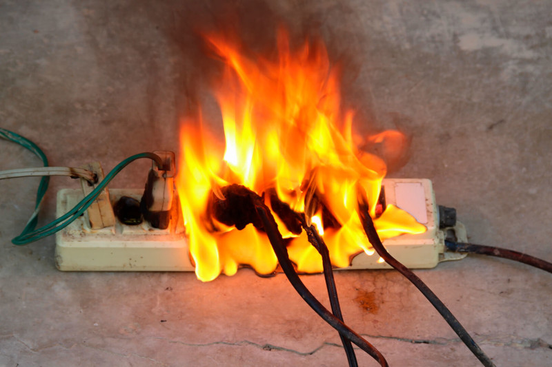

O que Fazer em Caso de Incêndio
Se você perceber um pequeno incêndio, siga estas orientações:
- Mantenha a calma e avalie a situação.
- Se o fogo estiver pequeno e controlável, utilize um extintor de incêndio adequado ou uma toalha molhada para abafá-lo.
- Desconecte a eletricidade se for seguro fazê-lo e afaste-se do fogo.
- Se o fogo se espalhar ou não puder ser controlado, evacue o local imediatamente e chame os bombeiros.
- Não tente apagar o fogo se houver risco de explosão ou se ele estiver em materiais inflamáveis, como cortinas ou móveis.
Prevenção de Incêndios
Para prevenir pequenos incêndios, considere as seguintes dicas:
- Não deixe velas acesas sem supervisão.
- Desconecte aparelhos elétricos quando não estiverem em uso.
- Verifique regularmente as instalações elétricas e troque fios danificados.
- Armazene materiais inflamáveis em locais seguros e longe de fontes de calor.
- Tenha um extintor de incêndio adequado e em bom estado em casa.
Quando Chamar os Bombeiros
Chame os bombeiros se:
- O fogo não puder ser controlado rapidamente.
- O incêndio estiver se espalhando para outros cômodos ou áreas.
- Você estiver em dúvida sobre a segurança de tentar apagar o fogo.
- Houver fumaça ou chamas visíveis fora do local onde começou o incêndio.